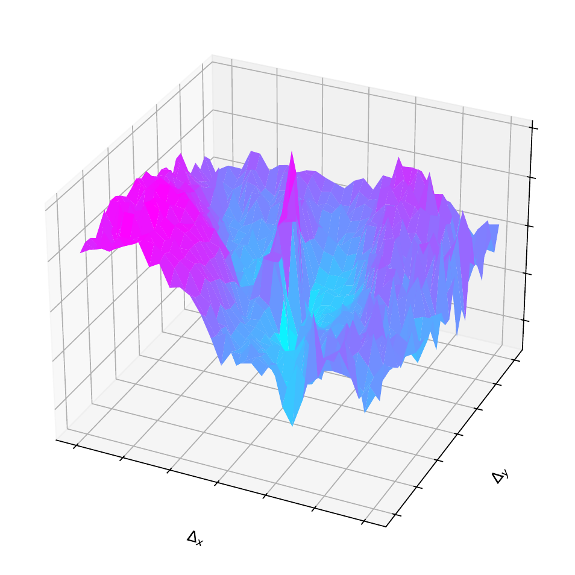
Naive Sparse Model: A rugged, noisy landscape traps the optimizer.
 1Sun Yat-sen University
1Sun Yat-sen University
World models are essential for autonomous robotic planning. However, the substantial computational overhead of existing dense Transformer-based models significantly hinders real-time deployment. To address this efficiency-performance bottleneck, we introduce DDP-WM, a novel world model centered on the principle of Disentangled Dynamics Prediction (DDP). We hypothesize that latent state evolution in observed scenes is heterogeneous and can be decomposed into sparse primary dynamics driven by physical interactions and secondary context-driven background updates. DDP-WM realizes this decomposition through an architecture that integrates efficient historical processing with dynamic localization to isolate primary dynamics. By employing a cross-attention mechanism for background updates, the framework optimizes resource allocation and provides a smooth optimization landscape for planners. Extensive experiments demonstrate that DDP-WM achieves significant efficiency and performance across diverse tasks, including navigation, precise tabletop manipulation, and complex deformable or multi-body interactions. Specifically, on the challenging Push-T task, DDP-WM achieves an approximately 9x inference speedup and improves the MPC success rate from 90% to 98% compared to state-of-the-art dense models.
Modern dense world models (e.g., DINO-WM) apply the same costly self-attention to all parts of an image, whether it's a moving object or a static wall. This creates a massive efficiency bottleneck. Our design is motivated by two key insights into the nature of physical dynamics in the feature space of pre-trained models like DINOv2:
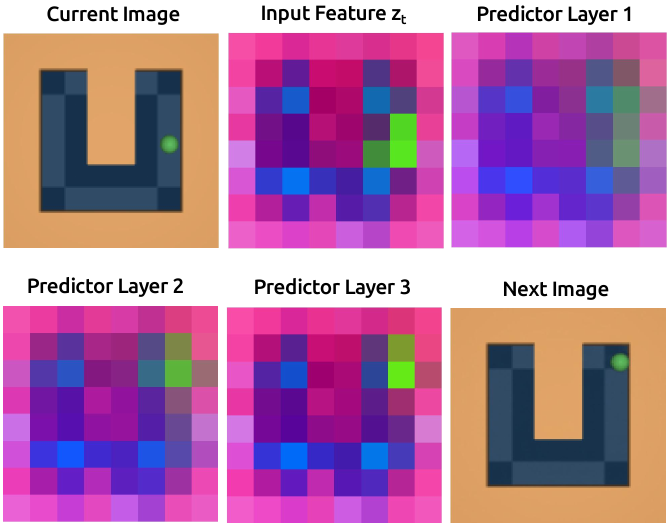
(1) Computational Redundancy: We analyzed the internal features of a dense Transformer-based world model. As shown by the PCA visualization above, the features for background regions (most of the image) remain almost unchanged across multiple, computationally expensive layers. This confirms that vast amounts of computation are wasted on static parts of the scene.
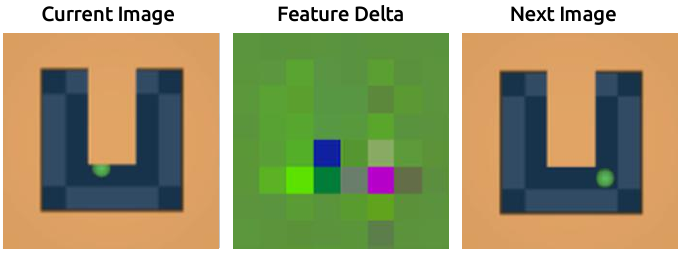
(2) Inherent Sparsity: The root cause of this redundancy is that physical dynamics are inherently sparse. By visualizing the difference between feature maps of two consecutive frames, we see that significant changes (non-green areas) occur in only a tiny fraction of the scene. This confirms that the core dynamics are localized and sparse.
Based on these insights, we introduce DDP-WM, a world model built on the principle of Disentangled Dynamics Prediction (DDP). The core idea is to decompose scene evolution into two distinct streams and allocate computational resources accordingly. Our architecture systematically implements this idea through several specialized modules:
This intelligent allocation of computation is the key to achieving a massive leap in both efficiency and planning performance.
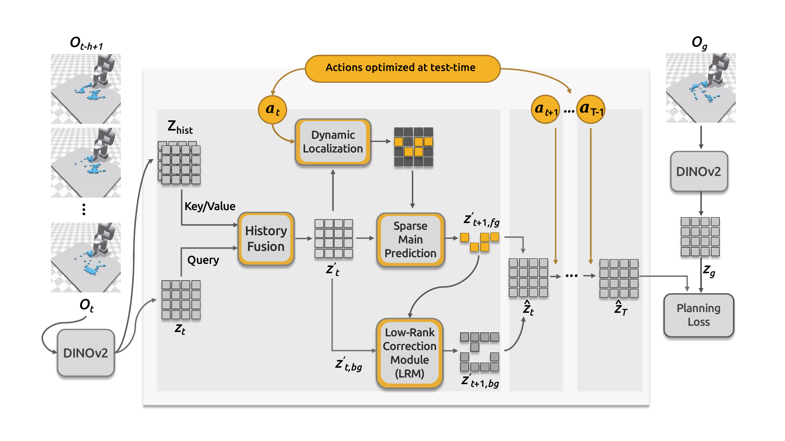
The DDP-WM Framework Overview. A four-stage process: (1) historical information is fused, (2) dynamic regions are localized, (3) a powerful predictor models the sparse primary dynamics, and (4) an efficient LRM updates the background, providing a smooth landscape for planning.
Why does DDP-WM succeed in closed-loop planning where naive sparse models fail? The answer lies in the optimization landscape provided to the planner. Naive "copy-paste" for the background creates a rugged, noisy cost surface full of local minima. Our Low-Rank Correction Module (LRM) ensures feature-space consistency, resulting in a smooth, funnel-shaped landscape that enables the planner to efficiently find the optimal solution.

Naive Sparse Model: A rugged, noisy landscape traps the optimizer.
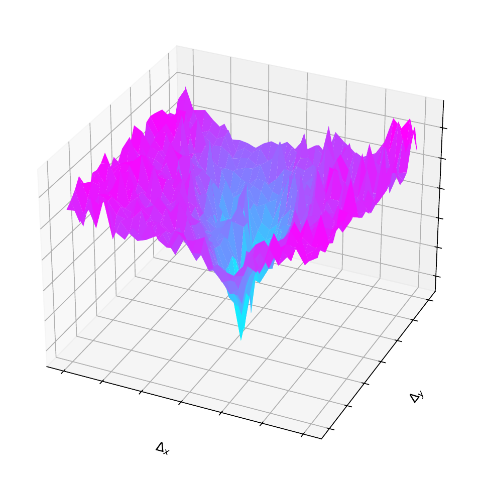
Our DDP-WM (w/ LRM): A smooth landscape provides a clear path to the global minimum.
This smooth landscape is possible because our LRM successfully learns the true, inherent low-rank structure of background dynamics. A PCA analysis shows the updates generated by our LRM almost perfectly match the low-dimensional nature of the ground-truth dynamics.
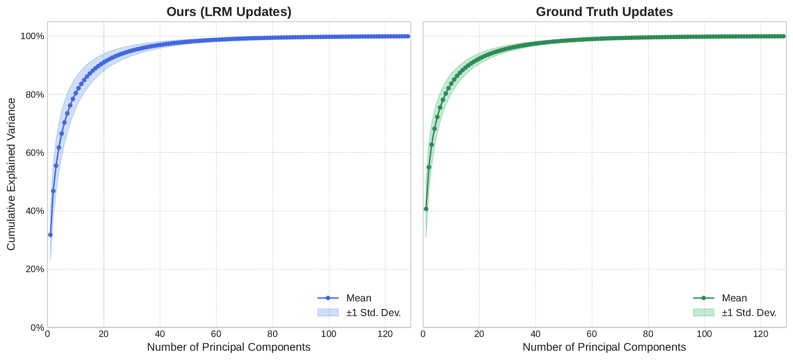
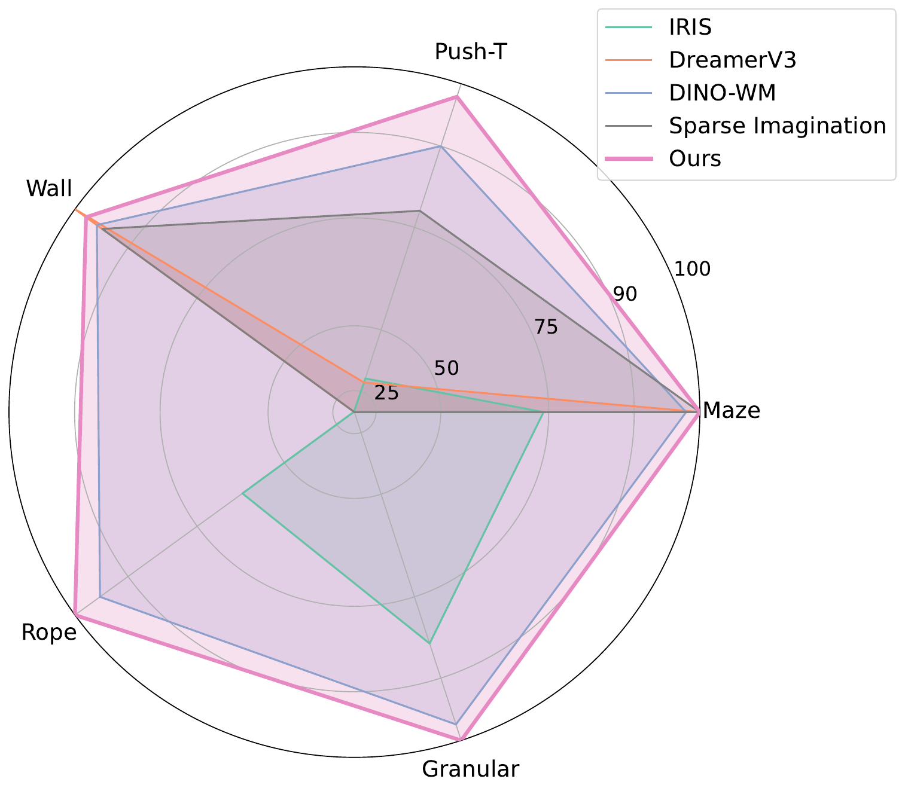
DDP-WM matches or surpasses SOTA dense models on all tasks, with significant gains on complex manipulation.
| Model | PointMaze (SR ↑) | Push-T (SR ↑) | Wall (SR ↑) | Rope (CD ↓) | Granular (CD ↓) |
|---|---|---|---|---|---|
| DINO-WM | 98% | 90% | 98% | 0.41 | 0.26 |
| DDP-WM (Ours) | 100% | 98% | 96% | 0.31 | 0.24 |
Our model provides significant speedups in the full MPC loop, enabling higher-frequency control.
| Task / Iterations | DINO-WM | DDP-WM (Ours) | Speedup |
|---|---|---|---|
| PointMaze / 10 | 39 s | 5.5 s | 7.1x |
| Push-T / 30 | 120 s | 16 s | 7.5x |
| Wall / 10 | 12 s | 4.2 s | 2.9x |
| Rope / 10 | 12 s | 4.3 s | 2.8x |
| Granular / 30 | 35 s | 13 s | 2.7x |
Qualitative comparisons of 5-step open-loop rollouts highlight DDP-WM's ability to generate high-fidelity predictions. While the dense baseline (DINO-WM) is powerful, its predictions can sometimes degrade over the horizon, accumulating blurriness or visual artifacts (e.g., rigid objects appearing to distort). In contrast, DDP-WM shows a greater tendency to produce sharp and physically coherent rollouts that better preserve key details. Each animation below shows results from DINO-WM (top row), DDP-WM (middle row), and the ground truth (bottom row).
Sample 1
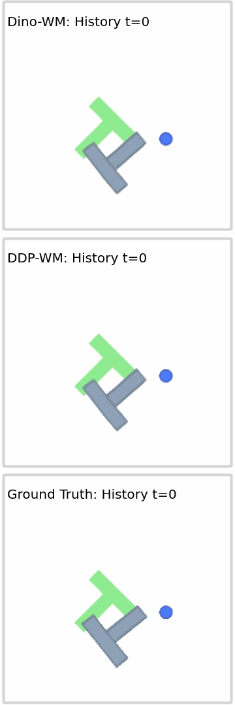
Sample 2
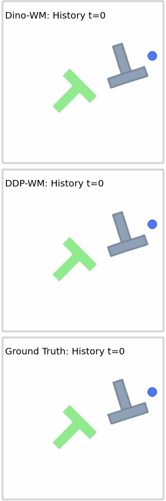
Sample 3
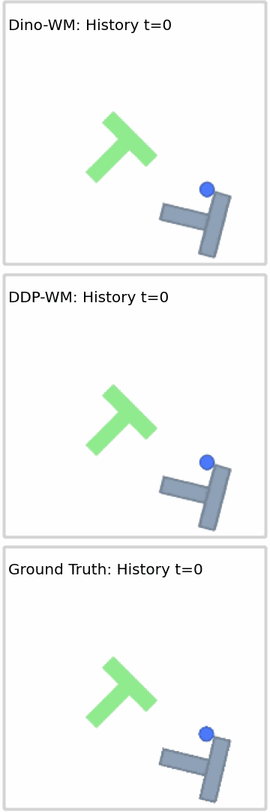
Sample 1
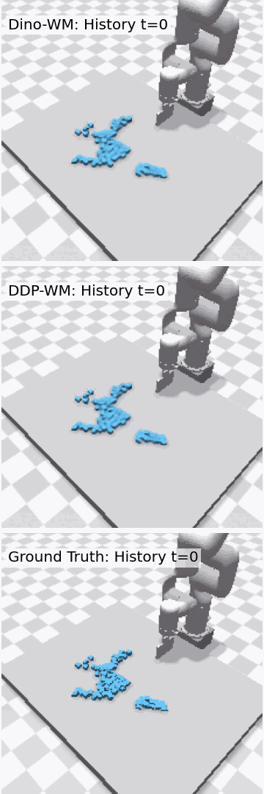
Sample 2
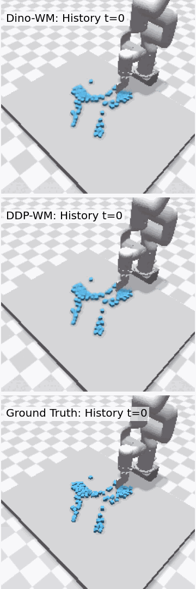
Sample 3
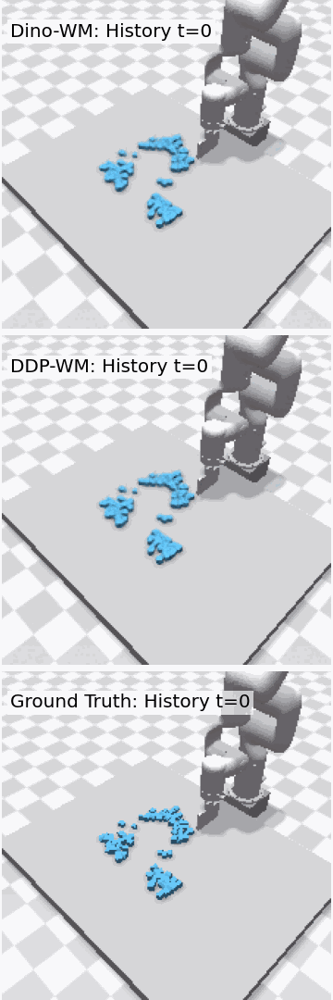
Sample 1
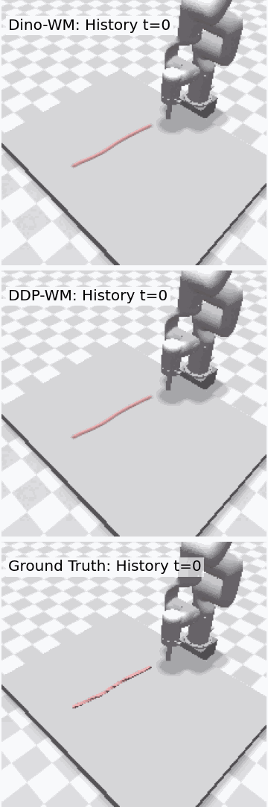
Sample 2
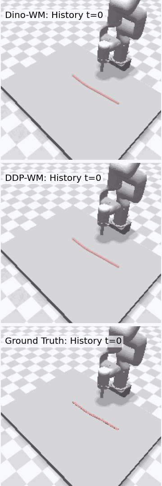
Sample 3
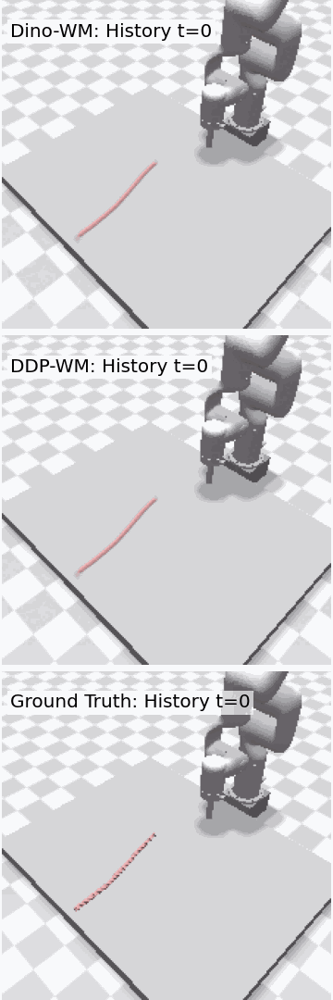
Below are side-by-side comparisons of MPC planning on the Push-T task. DDP-WM not only achieves a higher success rate (98% vs. 90%) but also demonstrates more precise and direct control. In cases where the dense baseline fails, DDP-WM often finds a successful trajectory.
DDP-WM successfully solves trajectories where DINO-WM fails.
@misc{yin2026ddpwmdisentangleddynamicsprediction,
title={DDP-WM: Disentangled Dynamics Prediction for Efficient World Models},
author={Shicheng Yin and Kaixuan Yin and Weixing Chen and Yang Liu and Guanbin Li and Liang Lin},
year={2026},
eprint={2602.01780},
archivePrefix={arXiv},
primaryClass={cs.CV},
url={https://arxiv.org/abs/2602.01780},
}